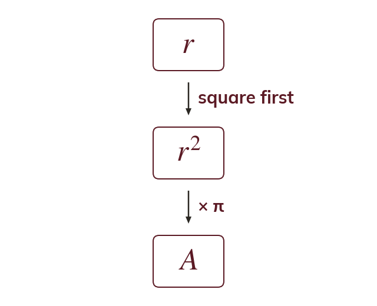

Squaring before multiplying
Area of a circle:
Square the radius first. The index applies to only, not to π.
The area of a circle is found using
The radius is squared first, then multiplied by π, because the index applies only to not to π as well.
The radius is squared first, then multiplied by π, because the index applies only to not to π as well.